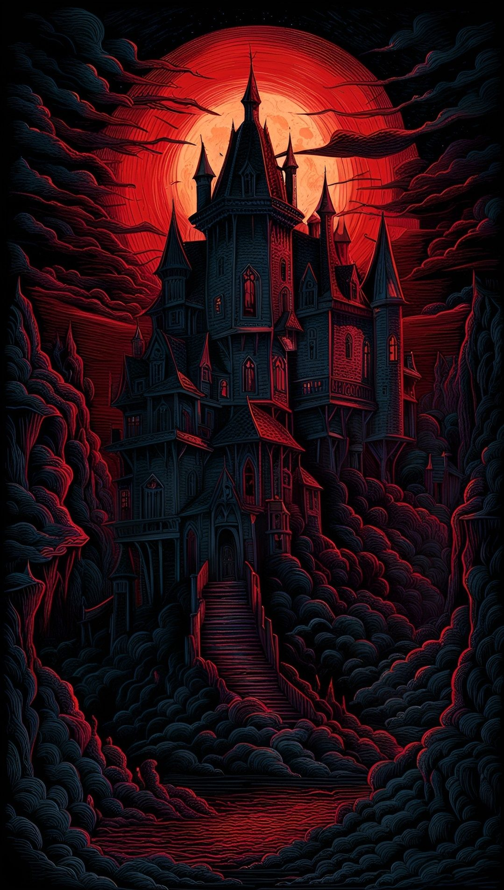

Skills
- Dodge: 4 (BODY 3 + Athletics 3 + 4 = 10)
- Hide: 4 (BODY 3 + Athletics 3 + 4 = 10)
- Move Quietly: 4 (BODY 3 + Athletics 3 + 4 = 10)
- Any weapon (as the weapon)
Weapons
| Weapon | Skill | Init | Off | Def | Dam | Range |
|---|---|---|---|---|---|---|
| Unarmed | 10 | 11 | 8 | 8 | +1 | - |
Typical specimen. Off/Def/Dam totals include the modifiers; Dam adds DB unless fixed.


Vampires are pale humans with long canine teeth and red irises. They live on fresh blood, preferably from humans. They are strong and enduring, but get weak in the presence of running water or sunlight. They dislike light but are not necessarily evil. Vampirism is a disease contracted by being thrice bitten by a vampire. Of the creatures listed here, only humans and ogres may become vampires. The victim will fall in a coma for seven days. He will then appear as if dead, since there is practically no heart activity. During the one week period a transformation will take place. The victim will gradually lose all pigmentation and turn deathly pale. The irises will turn red and the canine teeth will grow.
The character will then be a full vampire with all its advantages and drawbacks. A vampire does not age nor does his physical attributes change except by magic. Skills and mental attributes are treated normally in all aspects.
A vampire can suspend all its bodily functions and stay in a trance as long as he has a coffin with earth from the place he woke up as a vampire. While asleep they will sense any trespasser larger than a rat within 10 meters They may then decide to wake up the following night.
While awake, the vampire loses 2 in Strength each day. Drinking blood will recover this Strength. Human blood recovers 5 in Strength per liter. Blood from a human maiden recovers 10 per liter, while blood from other intelligent mammals recover 1 per liter. Blood from unintelligent mammals recover 1 per 2 liters. Human blood acts as a narcotic on vampires and makes them psychologically addicted to it.
Vampires recover 1 body point per hour and any bleeding stops within a minute. A vampire regenerates a severed limb within three weeks. They are not affected by poisons or diseases.
A vampire may transform himself into a wolf or become gaseous at will. The transformation takes one minute. The vampire keeps all his attributes while in wolf shape as well as all the vampire drawbacks and advantages. Due to the wolf’s keen senses of smell and hearing, the Awareness is raised by 6. In gaseous form, he can do pretty much nothing but drift around slowly.
A vampire loses 3 in Strength per minute in direct sunlight or running water. To kill a vampire permanently you have to chop him to pieces and scatter them, burn him to ashes, expose him to direct sunlight or running water, or drive a wooden stake through his hearth. If killed in wolf shape, a vampire will instantly begin to transform back to human shape. Vampires hate garlic and get sick from the smell of it. They will also back off from a visible cross and are unable to attack the bearer.
The characteristics given in the infobox to the right is modifications based on the pre-vampire characteristics.
NewPP limit report Cached time: 20260928074929 Cache expiry: 86400 Dynamic content: false Complications: [] CPU time usage: 0.155 seconds Real time usage: 0.848 seconds Preprocessor visited node count: 129/1000000 Preprocessor generated node count: 0/1000000 Post‐expand include size: 2892/2097152 bytes Template argument size: 0/2097152 bytes Highest expansion depth: 3/40 Expensive parser function count: 0/100 Unstrip recursion depth: 0/20 Unstrip post‐expand size: 0/5000000 bytes Lua time usage: 0.560/7 seconds Lua virtual size: 5.5 MB/50 MB Lua estimated memory usage: 0 bytes Transclusion expansion time report (%,ms,calls,template) 100.00% 827.535 1 -total 99.77% 825.661 2 Template:Infobox 0.16% 1.320 1 Template:Note Saved in parser cache with key my_wiki:pcache:idhash:289-0!canonical and timestamp 20260928074928 and revision id 4204